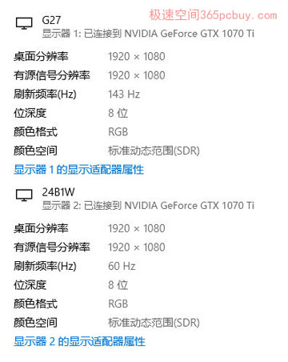
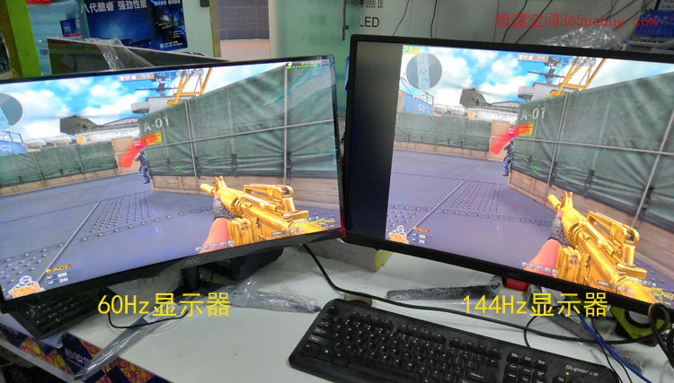

此文发表于2018年8月27日
不少用户想选一款高刷新率的显示器玩游戏，但由于没有条件体验144Hz和60Hz的实际表现区别，看完此文你会知道二者的差别。
电竞显示器最重要的要素就是：高刷新率，其地位超过了响应时间和色彩。以前电竞显示器的官方标准是100Hz以上，但显然这个数值低了，现在的主流基本上是120、144、165、240等数值，连480Hz的都已经有了，但其中144Hz为主力选手，144Hz也几乎成为”电竞显示器“的代名词。
普通显示器的刷新速度为60Hz，即一秒钟屏幕能显示60张图像，这个速度我们看起来就很流畅了，以至于很多人用过60Ｈz的显示器后，升级到144Ｈz后感觉不出来速度的提升。
实际也是如此，高刷新率的优势在FPS类游戏中、需要高速画面切换的时候，才能充分体现出来。这类游戏的主要代表有：绝地求生、守望先锋、孤岛危机、CF......等。
下面我们一起来对比试试。
实测平台：
R7-2700X、微星B450M火箭筒、海盗船8GB-DDR4-2400、微星GTX1070Ti、西数240GB SSD、
测试方法：
把一台144Hz显示器和另一台60hz显示器同时接到显卡上，对比《使命14》和《穿越火线》


分别用两台显示器分别玩《使命召唤14》《CF》，感觉不出明显区别，于是把两台显示器同时接到显卡上，放在一起对比，可以感受到在高速切换画面的时候，144Hz的更流畅。
换一种方法：先盯144屏幕玩两分钟，再把视线切换到60Ｈz，144Hz显示器可以感到丝滑流畅，而60Hz的显示器则给人一种不紧不慢的感觉，不卡，够用，但并不出色。
如果用”风驰和电掣“来描述二者的速度差异，显然不合适，它们的差异没有这么大。
那么用人走路的速度来描述二者，我觉得60Hz如果是”大步流星“，而144Hz则相当于”健步如飞“。这两个词语可以比较准确的描述二者在FPS游戏中的表现。
测试结论：
不比不知道，一比吓了一小跳。用惯了60Hz的用户，如果第一次使用144Hz，可能没有明显感觉，但只要一对比就知道，144Hz确实更流畅，特别是在需要画面高速切换的游戏中，这个差别是很明显的。
高刷新显示器现在的价格也不是高不可攀了，144Ｈz电竞显示器在2014年9月刚上市的时候，价格高达3699元，现在二线牌子1000出头，一线也不到1500就能买到。
但是，除了刷新率，影响电竞显示器的因素还有：响应时间、面板等因素。144Ｈz倒是选定了，但还面临一个两难之选，如下：
1、144Hz+TN+1ms
2、144Hz+IPS+4ms
1的响应时间快但颜色要差点，2的颜色更好但响应时间慢点，那为什么不来个IPS+1ms呢？
原因是型号偏少，价格太贵。